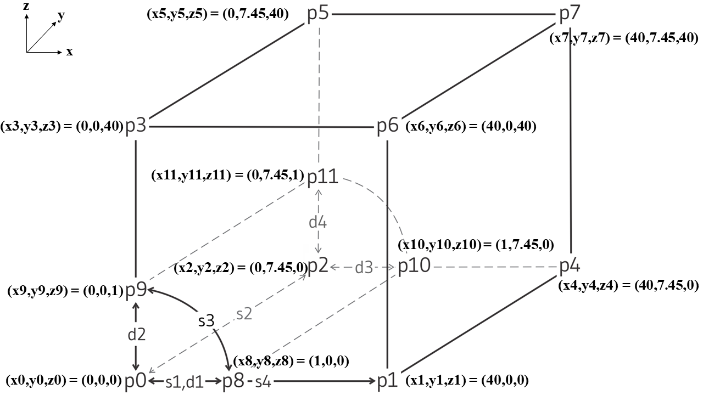
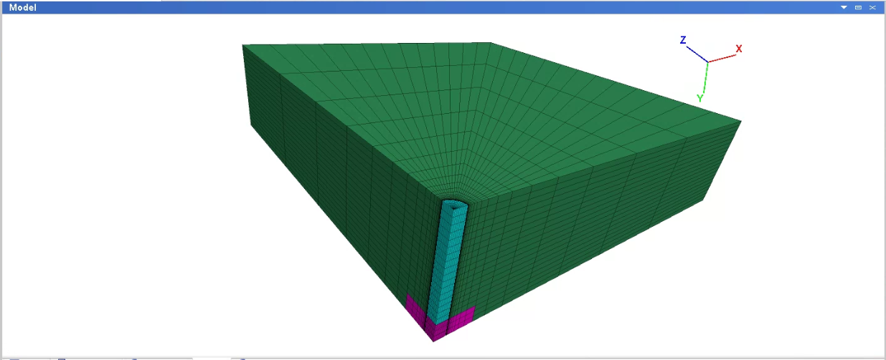

1 KAIST Model FLAC3D
1.1 Grid Generation
import itasca as it
import numpy as np
np.set_printoptions(threshold=20)
it.command("python-reset-state false")
from itasca import zonearray as za
from itasca import gridpointarray as gpa
" =========================================== "
" =============GRID GENERATION=============== "
" =========================================== "
#
it.command("""
model new
zone create radial-cylinder point 0 (0,0,0) ...
point 1 (40,0,0) ...
point 2 (0,10,0) ...
point 3 (0,0,40) ...
point 4 (40,10,0) ...
point 5 (0,10,40) ...
point 6 (40,0,40) ...
point 7 (40,10,40) ...
point 8 (1,0,0) ...
point 9 (0,0,1) ...
point 10 (1,10,0) ...
point 11 (0,10,1) ...
size 10 20 26 40 ...
rat 1 1 1 1.5 ...
fill group "shaft"
zone group "plate" range position-x 0 3.2 position-y 8.5 10 position-z 0 3.2
""")

1.2 Groups
it.command("""
zone group "plate" range position-x 0 3.2 position-y 8.5 10 position-z 0 3.2
""")1.3 Properties
it.command("""
; Constitutive model and properties for soil
zone cmodel assign strain-softening range group "Radial Cylinder1"
zone property density 2500 bulk 2e8 shear 1e8 range group "Radial Cylinder1"
zone property cohesion 2e6 friction 45 tension 2e5 dilation 10 range group "Radial Cylinder1"
zone property table-friction 'fri' table-cohesion 'coh' table-dilation 'dil' range group "Radial Cylinder1"
table 'fri' add (0, 45) (.05, 42) (.1, 40) (1, 40)
table 'coh' add (0,2e6) (.05,1e6) (.1,5e5) (1,5e5)
table 'dil' add (0, 10) (.05, 3) (.1, 0)
; Constitutive model and properties for shaft and plate
zone cmodel assign elastic range group 'shaft'
zone property bulk 8.333e7 shear 3.846e7 range group 'shaft'
zone cmodel assign elastic range group 'plate'
zone property bulk 8.333e7 shear 3.846e7 range group 'plate'
""")